These are my works as Designer, and later, Assistant Lead Design (from Volume 4 onwards) at The Slow Press — an independent zine interested in looking at stories surrounding food, by people passionate about food. Much of the process at The Slow Press is highly collaborative; I design spreads for writers, sometimes integrating photography and illustrations from other talented contributors. I've tried to note them alongside each spread.
On top of designing spreads for the zine, as Assistant Lead Design, I also participate in the cover shoots for the zine, from conceptualization to art direction and assembly, together with the rest of our talented team.
For mobile users, please scroll horizontally (left to right) to view the full table below.
| Volume 6: Best Before 2023 |
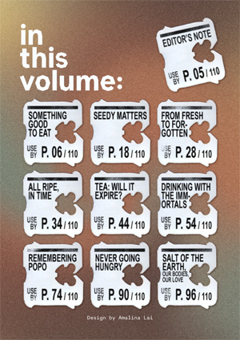 | Contents Page Spread design. A5, 1 page. |
| 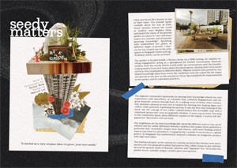 | Seedy Matters Spread design. A5, 10 pages. Photography by Rachel Wong.
|
|
| 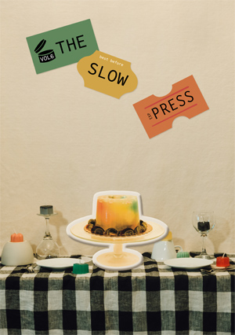 | Front & back covers. Ideation, art direction and assembly. Ideation, art direction and assembly of the multicoloured agar centerpiece, as well as the photography set together with Melody Koh. Photography by Glen Foong. Sticker design (in the image) by Melody Koh. (Instagram posts documenting the process: one, two.) The concept was a do-it-yourself still life scene including a savoury agar puffy sticker center piece. The zine would come with an accompanying sticker sheet featuring nine stickers, each representing the nine pieces in the zine for readers to stick on the cover as they please, creating a still life scenescape of their choosing. The zine title stickers were hand-stuck on every cover of the physical zines together with the entire team. |
|
| 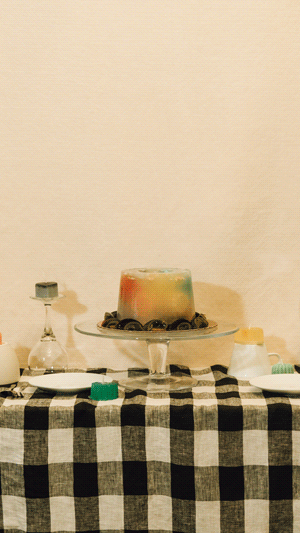 | Instagram collateral: launch gif. GIF creation. 12 frames. Made for an Instagram post on The Slow Press' account for the launch of Volume 6. Photography by Glen Foong. Sticker design by Melody Koh. |
|
| 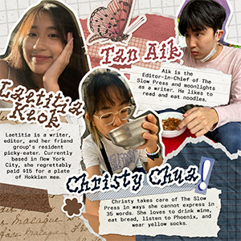 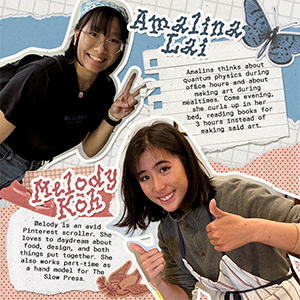 |
Instagram collateral: contributor carousel. Design. 7 images / slides. Made for an Instagram post on The Slow Press' account celebrating the contributors of Volume 6. Portraits submitted by the respective contributors. |
|
| Jiak Kentang Minizine 2023 |
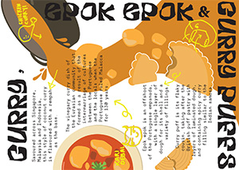 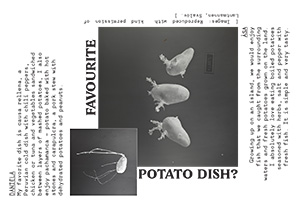 |
Entire 16-page A7 zine, including cover and back pages Spread design & illustration. Made for Singapore Art Museum for Singapore Biennale 2022: Natasha, as a complement and response to the artwork Papitas Tarpuycha/Earthing Potatoes by Åsa Sonjasdotter and Daniela Zambrano Almidón. |
| Volume 5: Bittersweet 2022 |
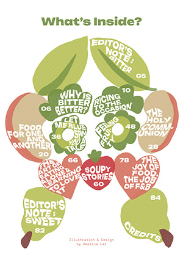 | Contents Page Spread design & illustration. A5, 1 page. |
| 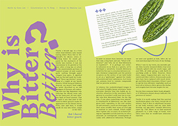 | Why is Bitter Better? Spread design. A5, 4 pages. Illustration by Toh Yi Rong. |
|
| 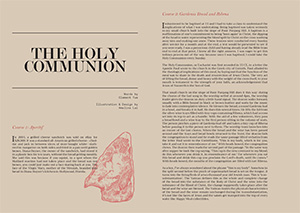 | The Holy Communion Spread design & illustration. A5, 8 pages. Based on a moodboard shared by the writer, Clement Yue. |
|
| 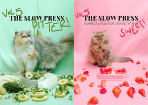 | Front & back covers. Ideation and assembly. Ideation and assembly of the photography set for the cover page together with Melody Koh using cut fruit and vegetables. Photography by Glen Foong. Cover design by Melody Koh. |
|
| Volume 4 2021 |
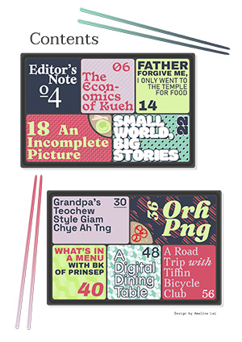 | Contents Page Spread design & illustration. A4, 1 page. |
| 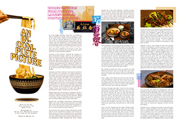 | An Incomplete Picture Spread design. A4, 4 pages. |
|
| 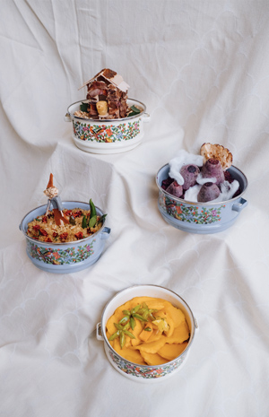 | Inserts (Tiffin scenescapes). Ideation, art direction and assembly. Ideation, assembly and art direction of the four tiffin scenescapes together with Melody Koh out of mixed media, including food components. Photography by Glen Foong. The concept was based on the loose theme of 'portions' in this volume, leading us to adopt tiffins. We wanted to create somewhat absurd scenescapes using food materials. Descriptions of the four scenescapes from top, clockwise:
|
|
| Volume 3 2021 |
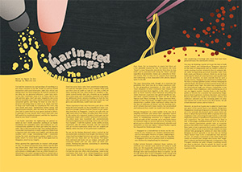 | Marinated Musings Spread design & illustration. A4, 2 pages. |
| 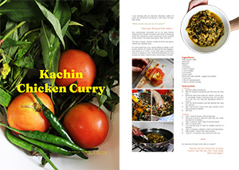 | Kachin Chicken Curry Spread design. A4, 2 pages. Photography by Irene Cheong. |
|
| Volume 2 2021 |
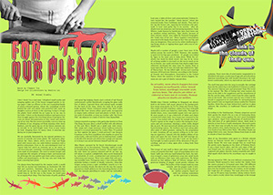 | For Our Pleasure Spread design & illustration. A4, 4 pages. |
| Volume 1 2021 |
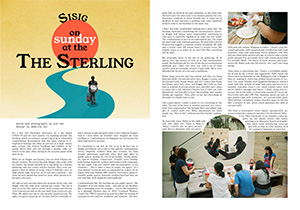 | Sisig on Sunday At The Sterling Spread design. A4, 4 pages. Photography by Tan Aik. |
| Newsletter 2020 |
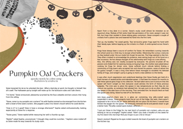 | Pumpkin Oat Crackers Spread design & illustration. A4, 2 pages. |
| 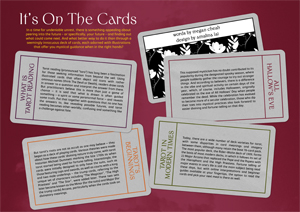 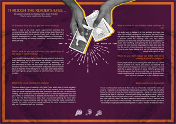 |
It's On The Cards Spread design & illustration. A4, 4 pages. Photography by Irene Cheong. |